A calmer way through anxiety.
Calmer is an anxiety self-help app for Android, built on cognitive behavioural therapy (CBT). Check in in twenty seconds, calm a surge in one tap, and learn the skills that change how anxiety works, at your own pace and without pressure.
It is free, with no adverts, no account and nothing to unlock. Everything stays on your phone, encrypted, and the app cannot go online.
Free, with nothing to unlock. Android 8 or later. Version 1.0, 3.0 MB. Compare · Release notes
Chrome may say the file might be harmful. It shows this for app files that do not come from Google Play. Choose Download anyway, open the file, and allow your browser to install apps if Android asks.
How it works
Anxiety shrinks when you understand it, have a way through the hard moments and practise facing it a little at a time. Calmer gives you all three, and never pushes.
Check in
Tap Check in once or twice a day. Twenty seconds is enough, and every check-in teaches you something about your own patterns.
Calm the moment
When it surges, Calm now breathes with you, brings you back to the room and keeps help close by.
Change the pattern
Short lessons, five-day programmes and CBT tools help you test worries, untangle thoughts and take brave steps. Insights shows what is working.
What it looks like
Warm, quiet and easy to read, with a sky on the home screen that shifts with the time of day and grows cloudier or clearer with your week.
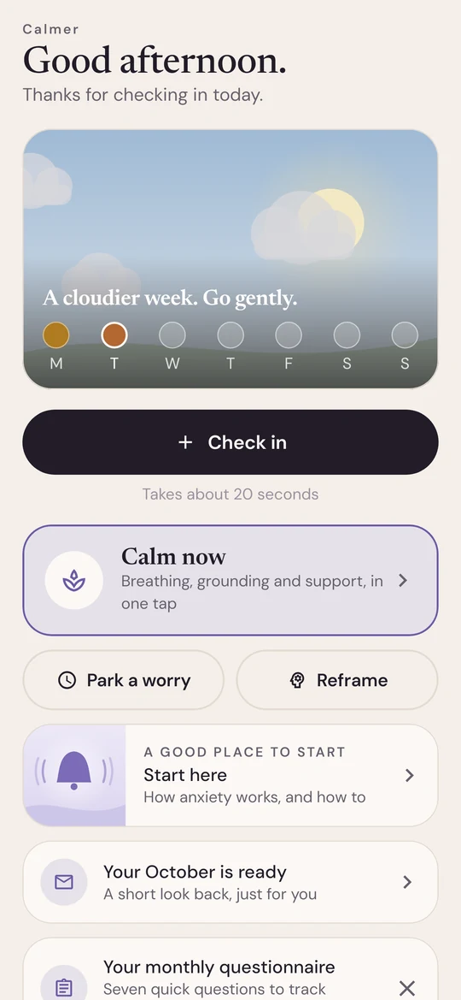
HomeA sky that changes with the time of day and with your week, and Calm now one tap away. 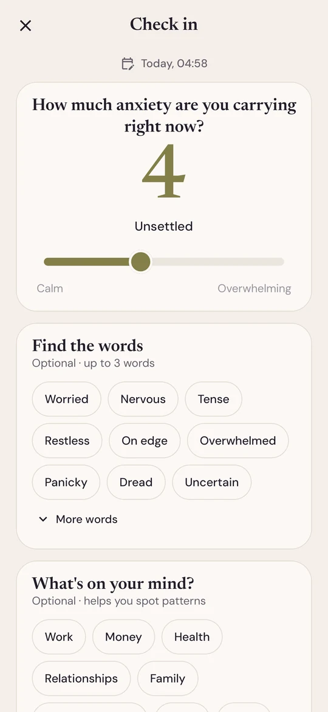
Check inHow anxious you feel from 0 to 10, and words for it if you want them. 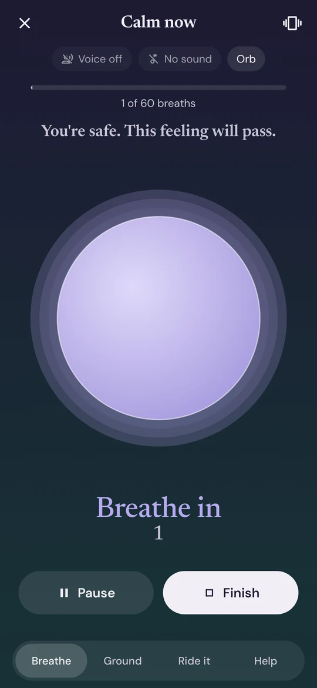
Calm nowBreathing at the pace of the orb, with grounding and help lines a tap away. 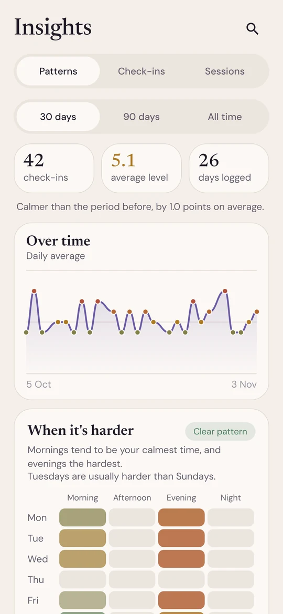
InsightsYour patterns, each one marked by how much it rests on. 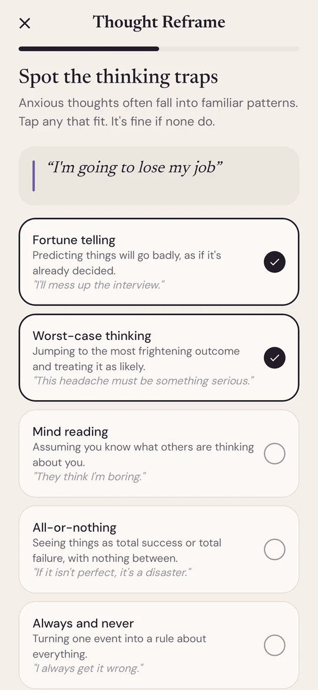
Thought ReframeSpotting the thinking traps in an anxious thought. 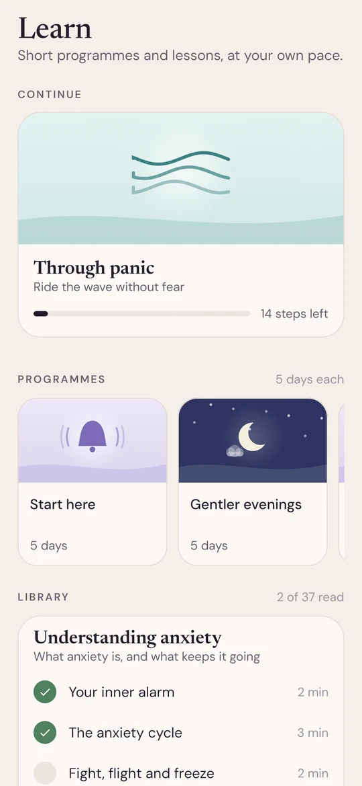
LearnTen short programmes and 37 lessons, at your own pace. 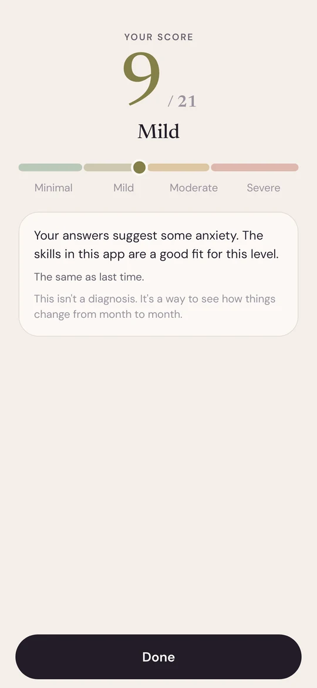
Monthly questionnaireA GAD-7 score, what it means, and how it compares with last time. 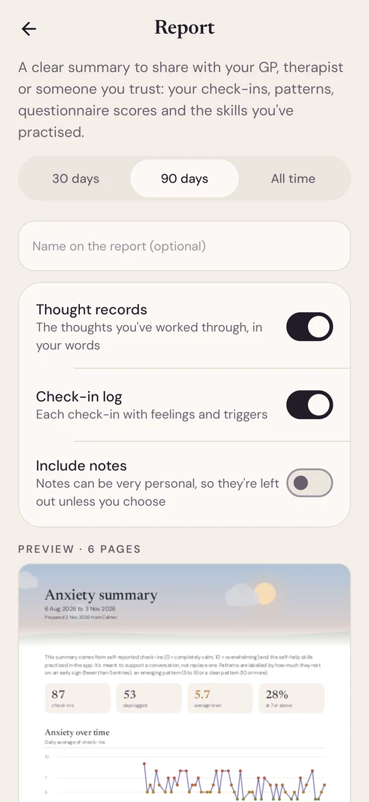
ReportA PDF to share with your GP or therapist, previewed before you send it. 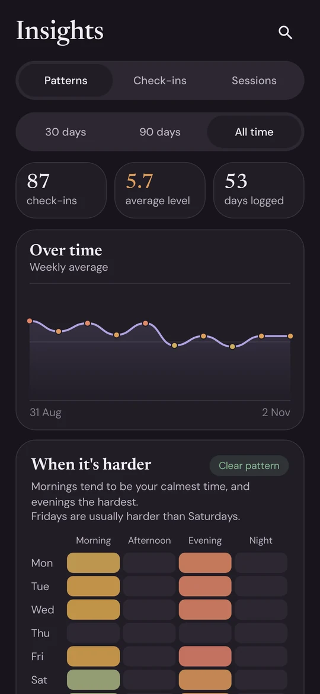
Dark themeThe same app at night, in a softer, darker look.
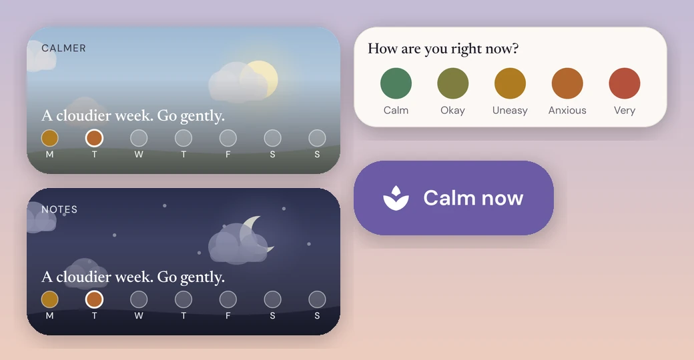
Everything is in, and all of it is free
Use it as a simple check-in and a breathing tool, or go deeper with lessons, programmes and CBT skills. Nothing is held back for a paid version, because there isn't one.
- Check in in twenty seconds
- Slide to how anxious you feel from 0 to 10, then add words for the feeling, where it sits in your body, what was going on and what helped, if you want to. Sleep, caffeine and a note are there too.
- Calm now, in one tap
- Guided breathing, 5-4-3-2-1 grounding, a timer for riding out a wave of panic, and the help lines, all on one screen. Its widget opens it straight away, even with the app lock on.
- Six ways to breathe, and your own
- Settle, cyclic sigh, box, resonant, 4-7-8 and a gentle pattern for when breathing feels hard. Follow an orb, a tide or a box, with vibration to breathe by, spoken cues and rain, sea or soft noise.
- Thought Reframe
- A step-by-step thought record. Name the thought, spot which of eleven thinking traps it falls into, weigh the evidence and find a more balanced view.
- Worry Lab
- Write a worry down as a prediction, with how likely and how bad it feels. Come back later and record what really happened. Over time you see how often worry gets it wrong.
- Worry Time
- Park a worry when it turns up and give it your full attention later, at a time you choose. A gentle reminder arrives then, and many worries have shrunk by the time it does.
- Brave Steps
- Face a fear one small step at a time, easiest first. Rate how anxious you expect to feel, then how it really went, and watch the gap open up.
- 37 short lessons
- Two or three minutes each, in eight topics: how anxiety works, panic, thoughts and worry, social anxiety, health worry, sleep, work and living well.
- Ten five-day programmes
- Each day has a lesson, something to try and one question to reflect on. Start here, Through panic, Better nights, Calm at work and six more.
- Insights
- When anxiety tends to rise, what seems to set it off, and which tools bring it down most for you. Every pattern says how much it rests on, so an early sign never looks like a fact.
- A monthly questionnaire
- The GAD-7, seven questions used by GPs and NHS Talking Therapies, once a month if you want it. Your scores make a chart of how things are changing.
- A report for your GP or therapist
- A clear PDF of your check-ins, patterns, questionnaire scores and the skills you have practised. Notes are left out unless you choose to include them.
- A letter each month
- A short, warm look back on the month before, written from your numbers and never from your notes. Share it as a picture if you like.
- Health Connect
- Compare how anxious you feel with your sleep, steps, resting heart rate and heart rate variability. Calm sessions can be saved as mindfulness minutes where your phone supports it.
- Three widgets
- Check in with one tap, see this week's sky, or open Calm now from your home screen.
- Reminders that stay quiet
- For a check-in, today's programme step and Worry Time. Never more than two a day, never in your quiet hours, and the wording never mentions anxiety.
- Private by design
- Everything is encrypted on your phone. Lock the app with a PIN or your fingerprint, and change its name and icon on your home screen if you would rather it was discreet.
- Backup you control
- A backup file locked with your own password, an automatic copy to a folder you pick each day, and spreadsheets of everything.
Built on methods that work
Cognitive behavioural therapy is the talking therapy NICE recommends for generalised anxiety and panic, and it is what NHS Talking Therapies offers. Calmer turns its core techniques into short, guided tools, with a little from acceptance and commitment therapy (ACT).
- CBT
Thought Reframe
Cognitive restructuring: catching an anxious thought, checking it against the evidence and finding a fairer one.
- CBT
Worry Lab
Behavioural experiments: testing a worry's prediction against what actually happens.
- CBT
Worry Time
Worry postponement: setting worries aside to a planned time, which loosens their grip on the rest of the day.
- Exposure
Brave Steps
Graded exposure: approaching what you avoid in small steps, so your alarm learns it can settle.
- Panic
Ride the wave
Letting a surge of panic rise and fall without fighting it, with a timer that shows it passing.
- ACT
Lessons and reflections
Acceptance and values: making room for anxious feelings and moving towards what matters to you.
- Body
Breathing and grounding
Slow breathing with a longer out-breath, and 5-4-3-2-1 grounding to bring attention back to the room.
- Learning
Understanding anxiety
Understanding what anxiety is and what keeps it going, which is the first step in every CBT course.
Gentle, and careful when it matters
Calmer never pushes. There are no streaks to break and no scores to beat, and every reminder can be switched off.
If a note you write sounds like you might be in crisis, a soft card appears with ways to reach someone straight away. It shows at most once a day, and the words are checked on your phone and go nowhere.
If most of your check-ins have been heavy for two weeks or more, or two monthly questionnaires in a row are high, Calmer gently suggests talking to someone and how. You can dismiss it, and it stays away for a fortnight.
Calmer is a self-help tool, not a crisis service or a replacement for professional care.
If you need someone now
- Samaritans116 123, free, any time
- ShoutText SHOUT to 85258
- NHS 111Option 2 for urgent mental health help in England
- 999If you or someone else is in danger
A report to take to your appointment
It can be hard to describe weeks of anxiety in a ten-minute appointment. The report does it for you: how things have been, when it is hardest, what helps, your questionnaire scores and the skills you have practised, in plain language on A4.
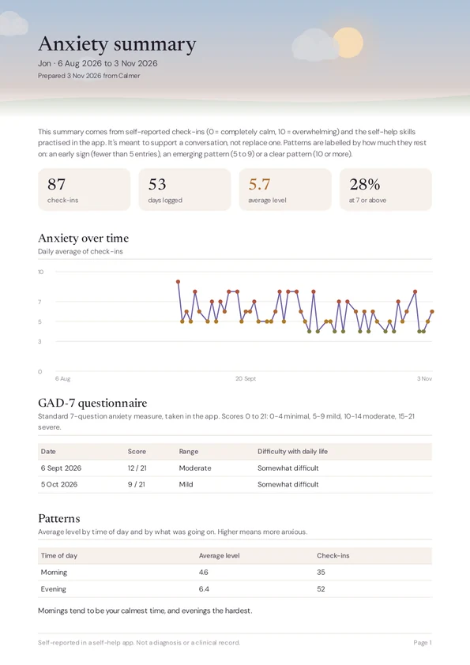
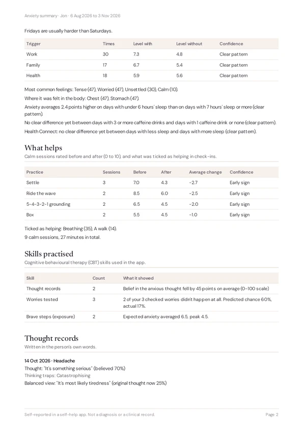
What it asks of your phone
Calmer has no access to the internet. Everything it can reach is listed here, with what it does and what it never does.
| Access | What Calmer does with it | What it never does |
|---|---|---|
| Notifications | Shows the reminders you switch on, at the times you choose. | Send offers, tips or anything you did not ask for, or mention anxiety on your lock screen. |
| Starting after a restart | Puts your reminders back after the phone restarts or the clock changes. | Keep running in the background. |
| Vibration | Paces your breathing with gentle pulses, if you switch it on. | Buzz at any other time. |
| Fingerprint or face | Unlocks the app, if you turn the app lock on and choose it. | See or store your fingerprint. Android keeps that to itself. |
| Health Connect | Reads sleep, steps, resting heart rate and heart rate variability, and saves calm sessions as mindfulness minutes, only if you allow each one. | Send health data anywhere, or keep it in backups. |
| A file or folder you pick | Saves or reads a backup, a report or a spreadsheet where you choose. | Look at anything else in your storage. |
| Internet access | None. The app does not ask for it. | Send your check-ins, notes or anything else off your phone. |
The detail is in the privacy policy.
What you write stays yours
Nothing is collected
Your check-ins, notes, thoughts, worries and scores are kept on your phone, encrypted. The developer never sees them.
It cannot go online
The app does not hold Android's internet permission, so it has no way to send anything anywhere.
No accounts, no adverts
There is nothing to sign up for, no advertising and no analytics. Copies leave the app only when you save or share one.
Free, without the subscription
Many anxiety apps keep their best parts behind a subscription. In Calmer, everything is included.
- The report is free
- AnxietyPulse lists its PDF and CSV export for therapists as a Premium feature. Calmer's report costs nothing.
- No subscription to manage
- Sanvello and Calm sell Premium by the month or the year. Calmer has nothing to buy.
- Stays on the phone
- Calmer cannot go online at all, so nothing you write can leave your phone unless you save or share it yourself.
Questions
Is Calmer really free?
Yes. There is no paid version, no subscription, no trial and no adverts, and nothing in the app is locked. The report for your GP or therapist is free too.
Is it on Google Play?
No. Calmer is a personal project and is downloaded from this site as an Android app file. It needs Android 8 or later, which covers almost every phone in use.
Does it need the internet?
No. The app does not ask Android for internet access at all, so it cannot go online. Links to help lines and NHS pages open in your own phone or browser.
Where is my information kept?
Only on your phone, in the app's private storage, encrypted with a key held by Android. Nothing is uploaded, and the developer receives nothing.
Is Calmer a treatment or a therapist?
No. It is a self-help tool built on methods from cognitive behavioural therapy. It can sit alongside care from your GP or a therapist, but it does not replace it, and it is not a medical device.
What if I am in crisis?
Calmer is not a crisis service. Call 999 if you or someone else is in danger. Samaritans are free on 116 123, day or night, and you can text SHOUT to 85258. In England, NHS 111 option 2 is for urgent mental health help.
Why can I change the app's name and icon?
Some people would rather an anxiety app did not announce itself on their home screen. You can show it as Calmer, Breathe, Journal, Notes, Daily or Stillpoint, with one of eight pastel icons.
What if I forget my PIN?
There is no way round the PIN, not even for the developer. You can clear the app's storage in your phone's settings, which deletes everything, and then restore your latest backup.
Do I need Health Connect?
No. It is optional. Without it, Insights still compares how you feel with the sleep and caffeine you add to check-ins.
How do I move to a new phone?
In Settings, open Backup and export, set a backup password and save a backup file. Install Calmer on the new phone, choose Restore from a backup and enter the same password.
Why did a reminder arrive late?
Reminders are gentle by design and Android can hold them back by a few minutes to save battery. They never ring during your quiet hours.
Who made it?
Calmer is made by Jonathan Jackson, an independent developer in the United Kingdom. It is not connected with the NHS or any other app maker.